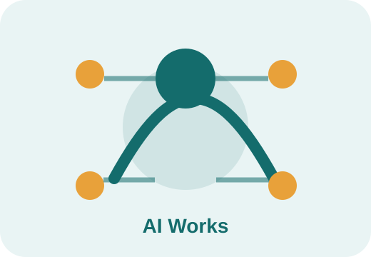

AI کیسے کام کرتی ہے؟
اس حصے میں ہم مصنوعی ذہانت کے اندرونی بنیادی تصورات کو آسان اردو میں سمجھیں گے: ڈیٹا، الگورتھم، زبان، تصاویر، پیش گوئی، مددگار نظام، اور تحقیق۔
یہ حصہ عام صارفین کے لیے بنایا گیا ہے تاکہ وہ technical تفصیل میں الجھے بغیر یہ سمجھ سکیں کہ AI کے جواب، اندازے اور سفارشات کیسے بنتی ہیں۔
موضوعات شروع کریں
Module 4 کے موضوعات
ہر موضوع میں آسان وضاحت، روزمرہ مثالیں، اہم نکات، اور آخر میں مختصر quiz شامل ہے۔
ڈیٹا اور مصنوعی ذہانت
مصنوعی ذہانت عموماً معلومات سے سیکھتی ہے۔ اس معلومات کو ڈیٹا کہا جاتا ہے۔ اگر ڈیٹا اچھا، درست اور متعلقہ ہو تو نتائج بہتر آتے ہیں۔
یہ موضوع پڑھیںالگورتھم آسان الفاظ میں
الگورتھم ایک طریقہ یا ترتیب ہے جس کے مطابق کمپیوٹر کوئی کام کرتا ہے۔ اسے آسان الفاظ میں کام کرنے کا نسخہ بھی کہہ سکتے ہیں۔
یہ موضوع پڑھیںAI اور انسانی زبان
مصنوعی ذہانت انسانی زبان کے نمونے دیکھ کر جملے سمجھنے، جواب دینے، خلاصہ بنانے اور ترجمہ کرنے کی کوشش کرتی ہے۔
یہ موضوع پڑھیںتصاویر اور ویڈیو کو سمجھنے والی AI
AI تصاویر اور ویڈیوز میں موجود اشیا، لکھائی، چہرے، رنگ، حرکت اور نمونے پہچان سکتی ہے۔ یہ کام کئی شعبوں میں استعمال ہوتا ہے۔
یہ موضوع پڑھیںپیش گوئی کرنے والی AI
پیش گوئی کرنے والی AI پچھلی معلومات کو دیکھ کر اندازہ لگاتی ہے کہ آگے کیا ہو سکتا ہے۔ یہ حتمی فیصلہ نہیں بلکہ امکان بتاتی ہے۔
یہ موضوع پڑھیںAI مددگار جو کام کے مراحل چلا سکتے ہیں
AI مددگار ایسے نظام ہو سکتے ہیں جو ہدایت لے کر کئی مرحلوں میں کام مکمل کرنے کی کوشش کریں، جیسے معلومات تلاش کرنا، فہرست بنانا، پیغام تیار کرنا یا کام ترتیب دینا۔
یہ موضوع پڑھیںAI کے ساتھ تلاش اور تحقیق
AI تلاش اور تحقیق کو تیز بنا سکتی ہے، مگر ہر معلومات کو معتبر ذرائع سے چیک کرنا ضروری ہے۔
یہ موضوع پڑھیں